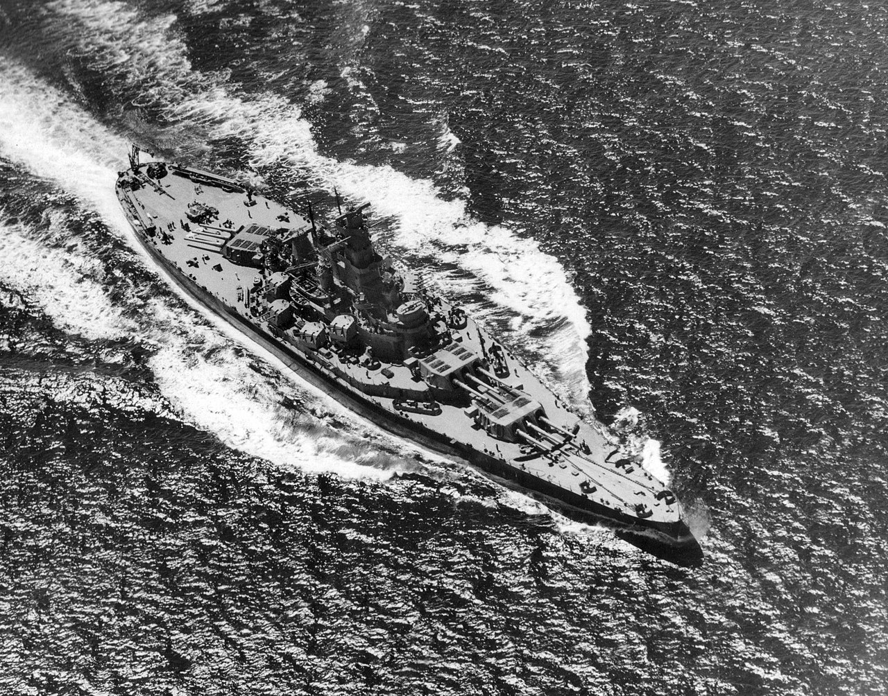
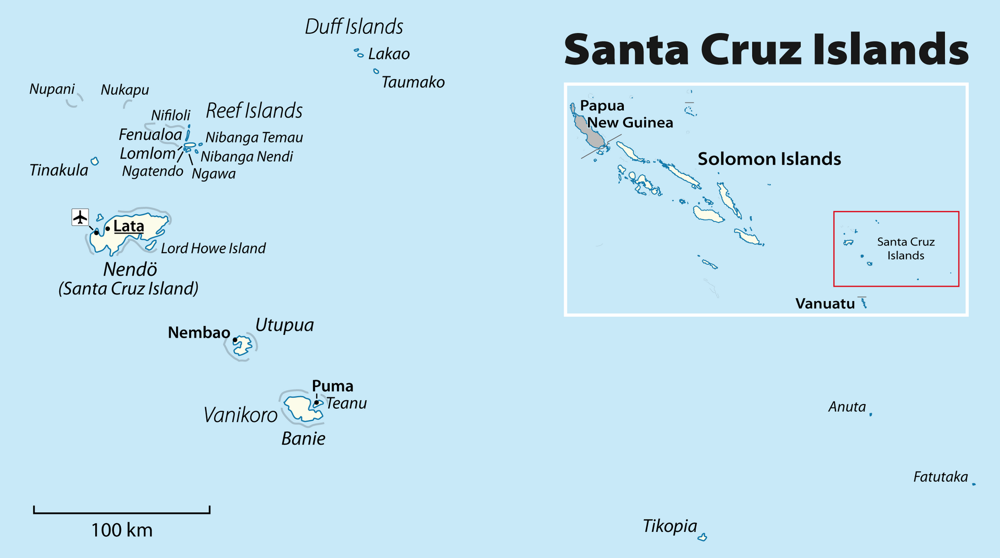
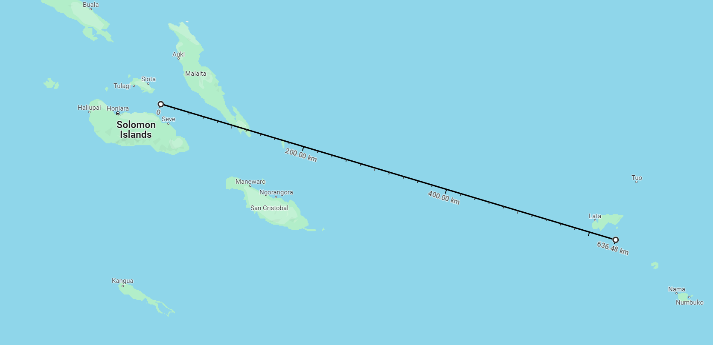
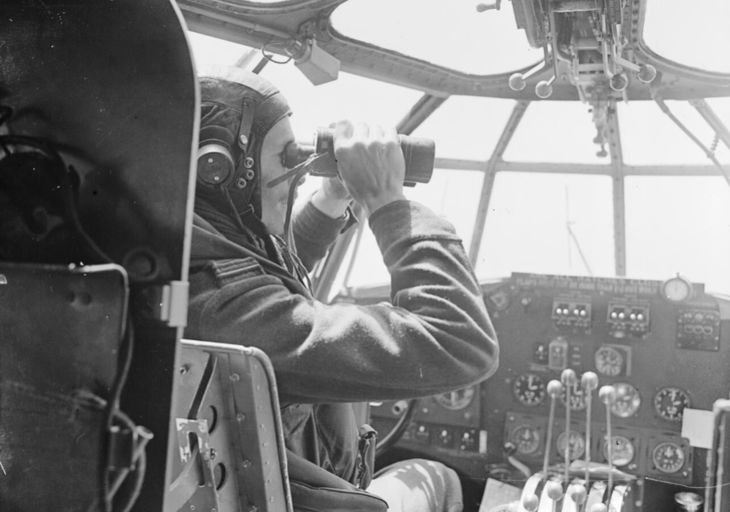
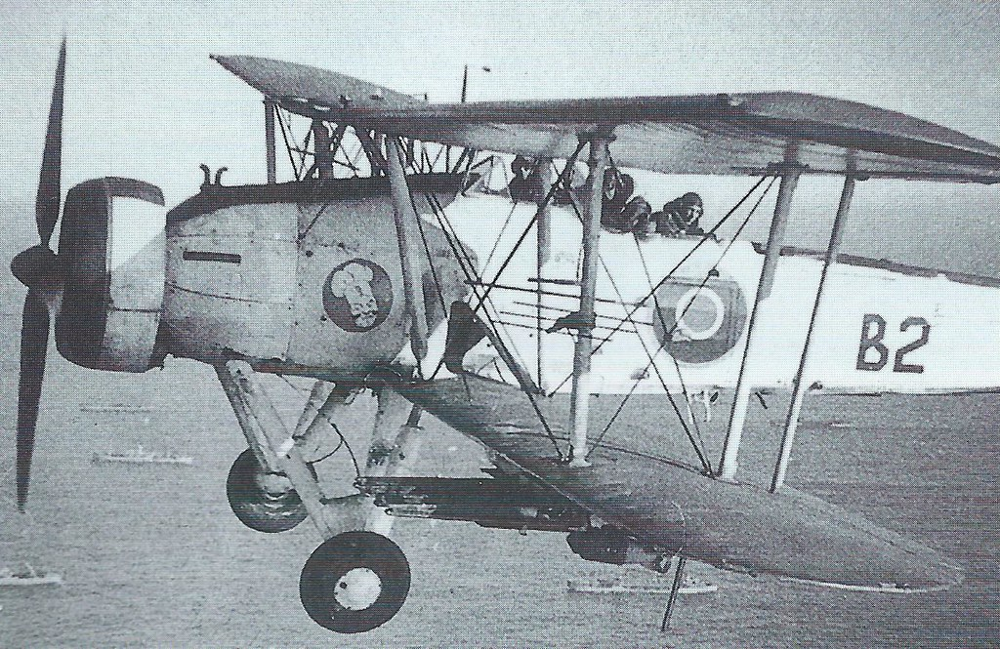
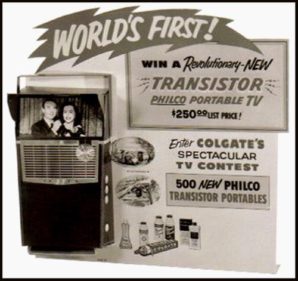
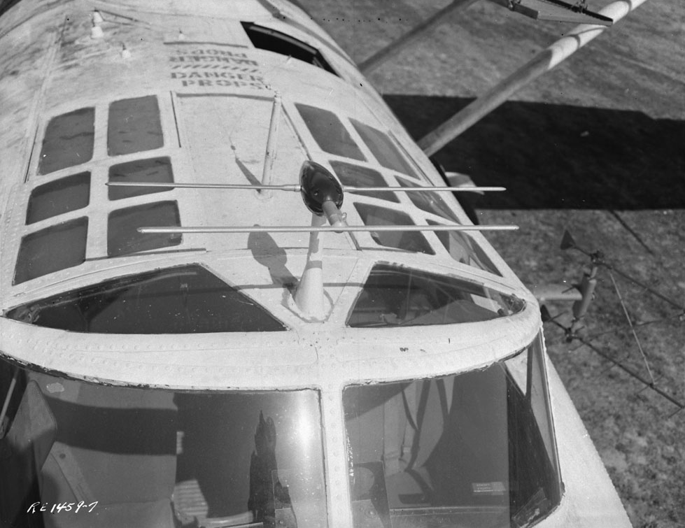
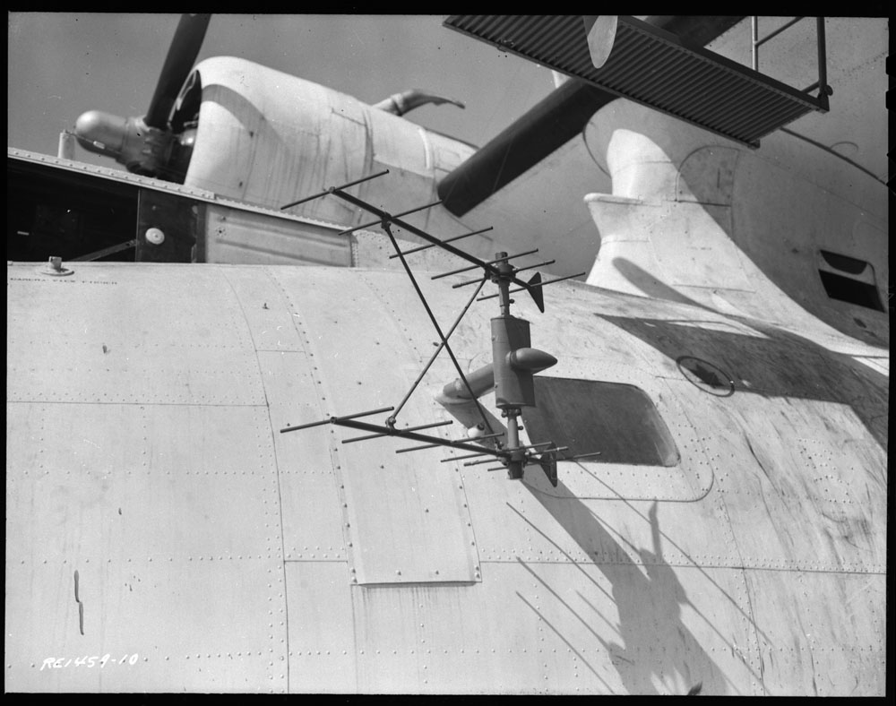
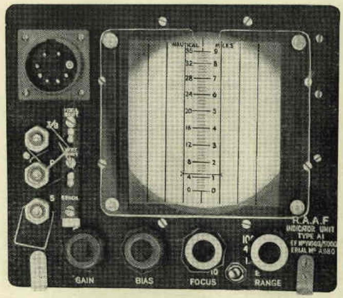

산타크루즈에서의 레이더 이야기 (1) - Eyeball Mk. I과 ASV Mk. II의 대결
게시: 2024-04-11T06:30:41+09:00
<미해군에는 수상정이 없나?> 1942년 10월 하순, 여전히 과달카날의 헨더슨 비행장을 둘러싼 전투는 맹렬했음. 다시 한번 미일 양국 해군은 과달카날 일대의 제해권을 놓고 격돌. 이것이 바로 산타크루즈(Santa Cruz) 해전. 일본해군에서는 정규항모 쇼가꾸, 즈이가꾸가 나왔을 뿐만 아니라 경항모 준요와 즈이호도 출동했고, 그 외 전함 4척과 순양함 10척, 기타 구축함 22척도 동반. 이에 맞서는 미해군에서는 정규항모 엔터프라이즈와 호넷이 신형 전함 USS South Dakota (BB-57, 4만5천톤, 27노트) 1척과 순양함 6척, 구축함 4척의 다소 간촐한 항모전단을 내보냄. 이렇게 미해군 함대 전력이 딸렸던 것은 바로 전달 항모 USS Wasp가 일본해군 잠수함의 어뢰에 격침되어 버렸기 때문.

(USS South Dakota는 1941년 6월에 진수되고 산타크루즈 해전이 벌어지기 약 7개월 전인 1942년 3월에 진수된, 미해군의 진짜 최신예 전함. 보통 쏘닥(SoDak)이라는 애칭으로 불리던 이 전함은 사우스 다코다급 전함 4척 중 nameship으로서 여러 측면에서 정말 우수한 전함이었다고. 바로 다음에 만들어진 것이 전함계의 끝판왕이라는 Iowa급 전함.) 지난 동솔로몬 해전이나 그 이전의 과달카날 인근에서의 해전들을 보면 언제나 일본해군 수상정들이 미해군 항모들을 먼저 발견하는 경우가 많았음. 이건 미해군이 침공하는 입장이어서 그 일대엔 일본해군의 수상정 기지들이 있었기 때문. 그러나 이제는 미해군도 그 일대의 섬에 상륙하여 헨더슨 비행장 등 발판을 마련했으므로 정찰용 수상정 활동을 활발히 전개시킬 수 있었음.

(산타크루즈 제도는 과달카날이 있는 동솔로몬의 동쪽 약 600km 지점의 일련의 섬들.)

(산타크루즈 섬들로부터 과달카날까지의 거리는 약 640km. 일본해군의 근거지인 라바울로부터 과달카날까지의 거리가 1000km가 넘는다는 것을 생각하면 훨씬 가까운 것.) <미해군의 영국제 레이더> 게다가 미해군의 수상정들은 일본해군이 가지지 못한 결정적 기술적 우위를 가지고 있었음. 바로 공대함 레이더 ASV Mark II. (이에 대해서는 https://nasica1.tistory.com/652 참조) 미국과 영국간의 국방 기술 교류 프로그램이었던 1940년 Tizard Mission을 통해 영국의 선진 레이더 기술이 미국에 그대로 도입된 것. 아직 cavity magnetron을 이용한 레이더는 양산되지 않아 비록 비교적 긴 1.5m짜리 파장을 쓰긴 했지만, 항공기에 장착하여 바다 위를 샅샅이 뒤질 수 있는 공대함 레이더 ASV Mark II는 정찰기가 바랄 수 있는 당시 최고의 옵션. 당시 정찰기의 장비라고 해봐야 기본 장비는 Eyeball Mark I (사람의 눈을 지칭)과 함께 망원경과 사진기 정도. 성능 좋은 망원경을 이용하면, 20~30km 떨어진 곳에 떠있는 전함도 눈으로 포착 가능. 그래서 눈이 좋은 조종사가 매우 중요. 그러나 바다는 넓고 사람의 눈은 쉽게 피곤. 인간적으로 사람이 360도 전체 방위를 흔들리는 망원경으로 1도씩 모두 다 흝을 수는 없음. 그러나 특히 ASV 레이더는 가능. ASV 레이더도 사람의 눈보다 엄청나게 더 뛰어난 것은 아니어서 최대 탐지 거리가 32km에서 구축함을 찾아내는 정도. 그러니까 망원경을 쓴 사람의 눈보다는 좋지만 그렇다고 엄청난 격차를 보이는 것은 아님.

(사진은 영국 로열에어포스 연안 사령부(Coastal Command) 소속 해상초계기인 Short Sunderland의 조종석. 조종사가 쌍안경으로 해상을 살피고 있음.) 하지만 ASV 레이더의 진짜 장점은 바로... 밤에도 적함대를 찾아낼 수 있다는 것. 일본해군 조종사가 아무리 눈이 좋아도 깜깜한 밤에는 아무것도 찾을 수 없음. 그러나 ASV 레이더는 가능. 뿐만 아니라 아무리 열의에 가득찬 일본해군 조종사라고 해도 두꺼운 구름 아래에 있는 적함대를 찾아낼 수는 없음. 그러나 ASV 레이더는 가능. 실제로 독일해군 전함 Bismarck의 격침도 ASV 레이더를 장착한 Fairey Swordfish 함재기들이 구름층 아래의 비스마르크를 찾아냈기에 가능했던 일.

(영국해군 Fairey Swordfish. ASV 레이더의 수신 안테나가 날개 사이의 지지대에 달려있음. 우리가 보기에는 그냥 가로살 몇개가 달려있는 것으로 보임) 이렇게 좋은 기술이 1940년부터 있었는데 미해군은 왜 여태까지 쓰지 않았을까? 일단 미해군과 미육군도 자체적인 항공기 탑재 레이더를 연구하고 있었고, 그것들과 이 영국제 ASV 레이더를 비교하고 평가할 시간이 필요했음. 평가 결과는 영국제가 쵝오! 미국방성은 이 영국제 레이더를 라이선스 생산하기로 하고 OEM 생산업자로 Philco를 선정. 필코사가 ASV Mark II 레이더 세트를 양산하여 미해군에 공급하기 시작한 것이 1941년 말부터였고, 본격적으로 PBY Catalina 비행정에 탑재되기 시작한 것이 1942년 초부터였음. 잘 알려지지는 않았지만 이미 미드웨이 해전 때도 이 ASV 레이더를 탑재한 카탈리나 비행정들이 정찰기로 나섰고, 일부 수상함정들을 레이더로 포착했었음. 왜 Dauntless나 Avenger 같은 함재 폭격기에는 탑재하지 않았느냐? 레이더가 너무 커서 도저히 단발 엔진 항공기에는 탑재가 어려웠음. 그만큼 소드피쉬에 그걸 탑재한 영국이 대단한 것.

(Philco사의 이름은 Philadelphia Battery Company에서 나온 것. 원래 배터리부터 시작해서 라디오를 만들다 1930년대를 거치면서 크게 확장되어 에어컨과 냉장고 등도 생산. WW2 종전 이후에는 이렇게 TV도 만들었음. 그러다 1960년대에 자동차 회사인 포드사에 인수됨.)

(이 사진은 캐나다 공군 소속의 PBY Catalina에 달려있는 ASV Mark II 레이더. 조종석 위에 달린 Yagi 안테나는 송신 안테나이고, 조종석 좌현에 약간 비스듬히 달린 어두운 색의 다소 작은 안테나가 수신 안테나. 같은 수신 안테나가 우현에도 달려 있음.)

(이건 PBY Catalina 조종석 옆의 지향성 수신 안테나를 더 잘 보여주는 사진. 일부러 약 15도 정도 비스듬히 달았는데, 그렇게 하는 것이 넓은 각도로 전방을 탐색하는데 좋았다고. 구축함급의 수상함은 거의 40km 정도까지 탐지 가능.)

(ASV Mk. II 레이더 세트의 핵심인 L-scope. 수신 안테나가 조종석 좌우에 하나씩 달려 있으므로 오실로스코프의 신호도 좌우에서 각각 1줄씩 나옴. 이 한 쌍의 쌍동이 신호 강도를 비교하여 지금 포착된 선박의 방향이 좌측인지 우측인지 파악했음.) 카탈리나 비행정들은 원래 8명의 승무원을 태운 채 24시간 이상 체공이 가능하고 항속거리도 4000km에 달하는 매우 우수한 정찰기였는데, 거기에 이런 ASV 레이더까지 달았으니 정말 새벽부터 그 다음날 새벽까지 밤새도록 적함대를 찾아다닐 수 있었음. 이런 카탈리나 비행정들이 사방에 쫙 깔려 일본해군 기동부대를 찾아나섰으니 발견은 시간 문제. 그리고 정말 10월 26일 오전 3시 10분, 깜깜한 어둠 속에서 카탈리나 하나가 레이더로 뭔가를 포착. (다음 주에 계속)